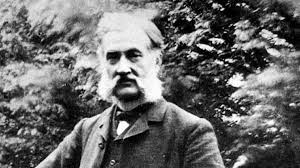

The Daily Case
Le Prince disapearance
By: Laren Abbott
The Editors of Encyclopaedia Britannica
A one hundred and eighteen year old mystery has resurfaced recently with new evidence that turned up in a New York library archive regarding the sudden disappearance of Louis Le Prince. Relatively unknown today, Louis Le Prince is the inventor officially recognized as the first person to record motion images on film, giving birth to today's motion picture industry.

In October of 1888 Le Prince recorded a series of moving images from Leeds Bridge in Leeds, England. Several years before either Thomas Edison or the Lumière brothers, Le Prince had been granted patents on both a 16-lens device and a single-lens type.
Born on August 28, 1841, Louis Aimá Augustin Le Prince was the son of a respected officer of the Lágion d'Honneur, a French order established by Napoláon Bonaparte in 1802. The elder Le Prince had some interesting friends, among them the photography pioneer Daguerre from whom his son Louis received photography and chemistry lessons. Later, Louis went on to an education at Paris and Leipzig Universies where he studied painting and chemistry.
In 1866 Le Prince moved from France to England at the invitation of a college friend. Three years later, Louis married his friend's sister, a talented artist. Together the new husband and wife began a school of applied art named the Leeds Technical School of Art. Soon they were well-renowned for their work combining photography on metal and ceramic. The family later moved to the US for some years while Louis managed a small group of French artists there. It was also in the US that Le Prince began to build his sixteen lens camera and experiment with film stock.
On September 16, 1890 Louis Le Prince disappeared never to be seen again. Le Prince had promised he would rejoin his friends in Paris for a return journey to England. However he failed to arrive at the appointed time and was never seen again by his family or friends. The last sighting of him was onboard a train leaving the Dijon platform. Though both French police and Scotland Yard carried out an exhaustive search for his body and luggage, neither was ever found and the case remained unsolved.
Enter Alexis Bedford, a graduate student at the University of New York. Bedford, who is studying chemistry and photography, has been doing research into the history of motion pictures for the past year and a half. His search has often led him to the inner forgotten archives of the New York library, which is where he made his discovery.
“I've always admired Louis Le Prince,” stated Bedford, “but really not much was known about him because of his sudden disappearance.” As Bedford relates it, he was turning over some papers on Thomas Edison's work with lighting methods when he stumbled across a dilapidated leatherbound book. The book would turn out to be one of many notebooks in which Edison was fond of jotting down ideas and test data. “Leafing through it,” explained Bedford, “I merely thought I'd find perhaps some interesting and as yet unknown processes that Edison had tried in the laboratory. I never thought I would stumble upon this!” He had found a small entry dated September 20, 1890 by Edison's own hand which read, “Eric called me today from Dijon. It has been done. Prince is no more. This is good news but I flinched when he told me. Murder is not my thing. I'm an inventor and my inventions for moving images can now move forward.”
Bedford, excited and puzzled by the entry immediately went to chat to the librarian curator Charlene Edmonds. Edmonds was unaware of the presence of the Edison journal, “but that's not surprising,” she later stated, “our library contains such a large amount of historical documents and some of them have been forgotten through the ages. I wouldn't be surprised at anything anyone found here!”
With Mrs. Edmonds' permission, Bedford took the journal back to New York University where he put it in the care of historian Robert E. Myre. After weeks of examining the journal to ascertain its authenticity (which included penmanship comparison with known Edison articles and a computed tomography scan), Myre agreed that the journal was indeed authentic and that the note dated September of 1890 was genuinely Edison's own.
“It is quite a different look at these amazing inventors and the time they lived in,” says Bedford. “Suddenly we're seeing Thomas Edison in a different light, as a person who had a strong stake in dominating the trademark industry. And we're seeing how the patent wars affected these scientists as they sought to garner attention for their inventions.”
“This is very exciting,” echoes Myre, “we are practically rewriting history with this evidence!”